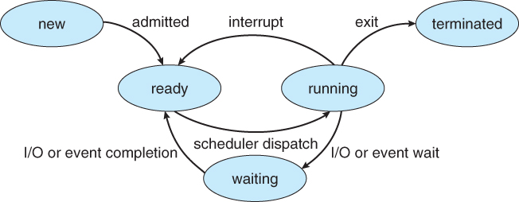

POSTS
用Elixir模拟一个进程状态机
进程状态机

用Elixir模拟进程状态机
我们用Elixir的process来模拟一个操作系统中的进程状态机
defmodule ProcessStateMachine do
def start() do
spawn(fn ->
# 进程启动后，进入新建状态：new
IO.puts("Process #{self() |> inspect()} is crated.")
# 此时进程状态转换次数为：0
new(0)
end)
end
def new(data) do
# 进入new状态后，如果收到admitted信号后，则进入就绪状态：ready
# 同时此时进程状态转换次数加1：data+1
receive do
:admitted -> ready(data + 1)
end
end
def ready(data) do
receive do
:dispatch -> ready(data + 1)
end
end
def running(data) do
receive do
:io_wait -> waiting(data + 1)
:interrupt -> ready(data + 1)
:exit -> terminated(data + 1)
end
end
def waiting(data) do
receive do
:io_completion -> ready(data + 1)
end
end
def terminated(data) do
IO.puts("Process #{self() |> inspect()} is terminated with #{data} transactions")
end
end- 这里每一个方法(new, running, waiting..)都表示一种状态
- 这里的data表示状态机附带的数据，这里记录的是状态的转换次数
- 当我们启动进程的时候，进程先进入new的状态
- 在每一种状态中时，我们只能响应特定的事件，这里通过
recieve来实现，比如，在是running状态，我们能响应:io_wait/:interrupt/:exit三个事件
def running(data) do
receive do
:io_wait -> waiting(data + 1)
:interrupt -> ready(data + 1)
:exit -> terminated(data + 1)
end
end